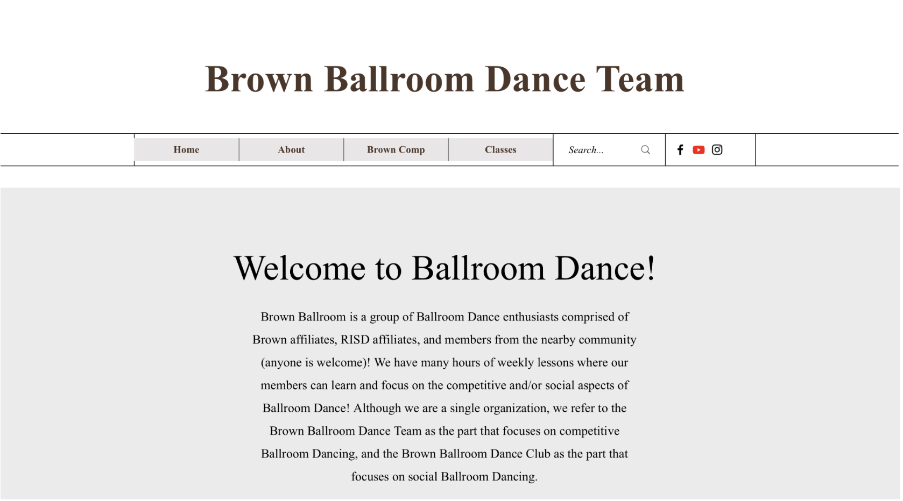

Website Selection
For my project, I have chosen the Brown Ballroom Dance website: Brown Ballroom Dance.
As a ballroom dancer myself, I have often found it challenging to find information on websites from different teams, which are usually more confusing than helpful. I believe this website is currently extremely minimal in design and has a lot of untapped potential.
Current Website Analysis
This website has a very simple structure, which does make it rather easy to navigate and learn. However:
- It is hard to find precise information; the only detailed dropdown is for Brown Comp.
- The home page is not functional, missing a lot of information and potential for announcements and news.
- There is no memorability or impression of the team given to the user.
Accessibility
Surprisingly, the website is quite accessible. It has many labels, and since it is black and white, the contrast is sufficient. However, it sometimes contains text that is too small and is missing a few labels and proper organization of lists.
Design Process
Initial Goals and Flaws
The initial goals of the redesign were to:
- Improve the overall navigability of the website.
- Make the homepage more functional by adding sections for announcements and news.
- Create a memorable impression of the team.
Through sketching and analysis, these goals were refined to focus on creating an easily navigable web experience for both new and experienced ballroom dancers, and incorporating opportunities for users to stay informed and engaged.
Refined Design Goals
- Create an Easily Navigable Web Experience: This aims to cater to both newcomers to ballroom dancing and those who are already familiar with it, making it easy for everyone to join the team.
- Incorporate Plug-In Opportunities:
- Google Calendar Integration: Adding a Google Calendar for classes to keep everyone updated on schedules.
- Email Subscription List: Providing an option to subscribe to an email list for regular updates.
- Social Media Platforms: Integrating links to the team’s social media platforms for broader engagement.
- Announcements Window: Featuring an announcements section to highlight upcoming events and important news.
Sketches
Here are some initial sketches that outline the proposed redesign of the website. The focus was on improving navigation, making the homepage more functional, and enhancing the overall visual appeal to better reflect the spirit of the Brown Ballroom Dance team.
- Sketch 1: Mini sketches for the homepage, creatively visualizing new features including sections for announcements, the google calendar incorportaion, and contact info.
- Sketch 2: More detailed sketch of the Dekstop version.
- Sketch 3: Visualizing phone and tablet layouts
Figma Prototype
After refining the sketches, I created high-fidelity prototypes using Figma. These prototypes are designed to be responsive, ensuring a seamless user experience across different devices. Key features proposed in the Figma prototype include:
- Google Calendar Integration: To keep track of class schedules.
- Email Subscription List Plug-In: Allowing users to easily subscribe for updates without reaching out via mail.
- Social Media Links: Providing easy access to the team’s social media pages.
- Announcements Window: Highlighting upcoming events and news.
Conclusion
The redesigned Brown Ballroom Dance website offers a more functional and visually appealing interface. By focusing on accessibility, usability, and responsive design, the new website provides a better platform for the team to share information and engage with visitors. The integration of various plug-in opportunities, such as Google Calendar, email subscriptions, social media links, and an announcements window, enhances the user experience and keeps the community well-informed and connected.